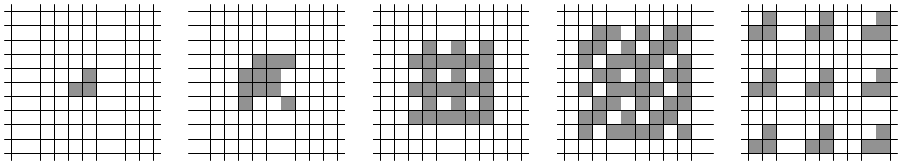
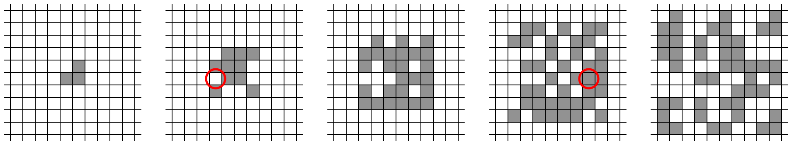

细胞自动制造公司 (Automatic Cellular Manufacturing) 最近刚刚获得批量生产零件的新工艺专利。它的方法使用到包含两种细胞状态的二维网格，每个单元的细胞要么为空，要么为满。当然，具体的细节是专有的。
最初，网格中的一组单元被填充为需要复制的细胞副本。进过一系列离散的步骤，网格中的每个单元会根据自身及附近的八个单元的状态同步进行细胞状态更新。如果这九个单元中有奇数个位置的细胞是满的，那么这个单元的下一个状态也是满的，否则会是空的。图 1 显示了一个由三个满细胞的单元组成的简单模式在复制过程中的几个步骤。
图 1. 复制过程。
然而，一个 bug 已经蛰伏在工艺中了。在每次更新单元状态之后，网格中某一个单元的状态可能自动变化。例如，图 2 显示了可能的变化，其中一个细胞在第一次状态更新后出现了自动变化，另一个细胞在第三次状态更新后出现了自动变化。
图 2. 复制过程中的错误。
很不幸，最初的细胞模式丢失了，只有 (可能受到 bug 影响的) 复制结果保留了下来。你能否编个程序确定可能的最小的非空的初始细胞模式来产生给定的最终模式呢？
第一行包含两个整数 $w, h$ ($1 \leq w, h \leq 300$)，其中 $w$ 和 $h$ 表示最终模式的边框宽度与高度。
接下来 $h$ 行，每行包含 $w$ 个字符，描述了最终的模式。每个字符要么是 . (表示该单元为空)，要么是 # (表示该单元为满)。
保证在第一行、最后一行、第一列、最后一列均存在至少一个单元是满的。
输出最小的非空的可能产生最终模式的初始模式，假设每个阶段至多会有一个单元状态自动变化。模式的大小取决于边框内的区域。
如果存在多种可能的最小的非空的初始模式，那么任意一种答案都被视为正确的。
请你使用字符 . 表示空的单元，使用 # 表示满的单元。请你用必须要使用的最小行数和列数来输出这个模式。
(小猫镇楼~)

上图其实是测试数据的第 13 个点，由此可见 ICPC World Final 主办方的认真程度~
不扯淡了，现在开始题解。
先假设没有复制错误，该怎么处理。
容易发现，对一个 pattern (模式)，设它的最小行数和列数分别为 $r, c$ (也就是说最小矩形为 $r \times c$)，则它进行一次 replicate (复制) 后，新的 pattern 的最小矩形肯定为 $\left( r + 2 \right) \times \left( c + 2 \right)$。
因此，对于一个 pattern $P_0$ ($r \times c$)，如果已知 $P_0$ 是由另一个 pattern $P_1$ 进行 replicate 得到的，则 $P_1$ 的最小矩形一定是 $\left( r - 2 \right) \times \left( c - 2 \right)$。
因此，如果 $r < 3 \vee c < 3$，则它不可能是另一个 pattern 复制得到的。现在不妨假设 $r \geq 3 \wedge c \geq 3$。
考虑 $P_0$ 的左上角 $\left( 1, 1 \right)$，它等于 $P_1$ 中 $\left( 0, 0 \right), \left( 0, 1 \right), \left( 0, 2 \right), \left( 1, 0 \right), \left( 1, 1 \right), \left( 1, 2 \right), \left( 2, 0 \right), \left( 2, 1 \right), \left( 2, 2 \right)$ 这 $9$ 个格子的异或和，而由于原 pattern 中，相对于 $P_0$ 的 "最外圈" 一定全为空。这么一来，只有 $\left( 2, 2 \right)$ 是可能非 $0$的，其余 $8$ 个格子一定为 $0$。
也就是说，$P_0 \left( 1, 1 \right) = P_1 \left( 2, 2 \right)$，也就是说，我们把 $P_1$ 最左上角的格子解决了。
接下来考虑 $P_0 \left( 1, 2 \right)$，类似地，利用已知信息 $P_1 \left( 2, 2 \right)$，可以解决 $P_1 \left( 2, 3 \right)$。
于是以此类推，像关灯问题一样，就能推出所有的 $P_1 \left( r, c \right)$。当然，$P_0$ 的最后两行和最后两列是用来检验的，如果检验不通过，则说明 $P_0$ 不是由 $P_1$ 进行 replicate 产生的，迭代终止，$P_0$ 就是最小的非空的初始模式。
当然，如果检验通过，说明 $P_1 \xrightarrow {\text{replicate}} P_0$，我们令新的 $P'_0 \gets P_1$，继续迭代，直到 $r < 3 \vee c < 3$ 或检验不通过。
于是，我们可以在 $O \left( \min \left\{ w, h \right\} \cdot w \cdot h \right)$ 的时间内完成没有复制错误的情形。
接下来有考虑有复制错误的情形。首先，和上面一样做法，如果检验通过，则说明 $P_1 \xrightarrow {\text{replicate}} P_0$ 且没有错误。
(简证：如果有错误，则说明新的 $P'_1 \neq P_1$，则考虑 $\mathop{\mathrm{replicate}} \left( P'_1 \oplus P_1 \right)$，可证明至少有 $4$ 个点，错误掉 $1$ 个点后还剩至少 $3$ 个点，因此不可能等于 $P_0$)
反之，如果检验不通过，我们如何快速找到是哪一个格子 $\left( r_0, c_0 \right)$ 产生了错误？
不妨设 $\left( r_0, c_0 \right)$ 产生了错误。则可以发现，在第 $r_0 + 1$ 行中，第 $c_0 + 1, c_0 + 2, c_0 + 4, c_0 + 5, c_0 + 7, \cdots$ 个格子会接连发生错误，因此该行的第 $c$ 列和 "第 $c + 1$ 列" 中至少有一个会发生错误，因此一定会在第 $r_0$ 行首次检验不通过。
因此，如果存在单个错误格子 $\left( r_0, c_0 \right)$，我们扫描的时候会在第 $r_0$ 行首次检验不通过，于是可以得到行标 $r_0$。
我们将矩阵转置再做一遍，就可以得到列标 $c_0$。
将 $P_0 \left( r_0, c_0 \right)$ 反转后，再做一遍进行检验，如果检验还是不通过，则说明不是单一错误，停止迭代，$P_0$ 就是答案。
如果检验通过，则令新的 $P'_0 \gets P_1$，反复迭代即可。
总时间复杂度不变，仍然是 $O \left( \min \left\{ w, h \right\} \cdot w \cdot h \right)$。
#include <bits/stdc++.h>
const int N = 381;
typedef char (*matrix)[N];
int ri = 1, rj, ci = 1, cj;
char map[2][N][N];
#define ROW(x) (M[x][c - 1] ^ M[x][c] ^ M[x][c + 1])
inline int pattern(matrix M, int r, int c) {return ROW(r - 1) ^ ROW(r) ^ ROW(r + 1);}
int get_invalid_row(matrix M, matrix res) {
int i, j; memset(res, 0, sizeof *map);
for (i = ri; i <= rj; ++i)
for (j = ci; j <= cj; ++j)
if ((res[i + 1][j + 1] = M[i][j] ^ pattern(res, i, j)) && (i >= rj - 1 || j >= cj - 1)) return i;
return 0;
}
int get_invalid_col(matrix M, matrix res) {
int i, j; memset(res, 0, sizeof *map);
for (j = ci; j <= cj; ++j)
for (i = ri; i <= rj; ++i)
if ((res[i + 1][j + 1] = M[i][j] ^ pattern(res, i, j)) && (i >= rj - 1 || j >= cj - 1)) return j;
return 0;
}
inline bool empty_row(matrix M, int r, int c1, int c2) {return std::all_of(M[r] + c1, M[r] + (c2 + 1), [] (const char x) -> bool {return !x;});}
inline bool empty_col(matrix M, int c, int r1, int r2) {return std::all_of(M + r1, M + (r2 + 1), [c] (const char* row) -> bool {return !row[c];});}
int main() {
int i, j, inv_r, inv_c; matrix cur = *map, nxt = map[1];
scanf("%d%d", &cj, &rj);
for (i = 1; i <= rj; ++i)
for (scanf("%s", cur[i] + 1), j = 1; j <= cj; ++j) cur[i][j] &= 1;
for (; ri + 1 < rj && ci + 1 < cj; ) {
inv_r = get_invalid_row(cur, nxt);
if (inv_r)
if (inv_c = get_invalid_col(cur, nxt), cur[inv_r][inv_c] ^= 1, get_invalid_row(cur, nxt)) {
cur[inv_r][inv_c] ^= 1; break;
}
std::swap(cur, nxt);
for (; empty_row(cur, ri, ci, cj); ++ri);
for (; empty_row(cur, rj, ci, cj); --rj);
for (; empty_col(cur, ci, ri, rj); ++ci);
for (; empty_col(cur, cj, ri, rj); --cj);
}
for (i = ri; i <= rj; putchar(10), ++i)
for (j = ci; j <= cj; ++j) putchar(cur[i][j] ? 35 : 46);
return 0;
}
坑1：注意错误点不一定发生在 $r \times c$ 矩阵内，还有可能发生在 $r \times c$ 的矩阵外部。因此，每迭代完毕一次后，不能单纯地将 r -= 2, c -= 2，需要 "暴力" 去除边上的空行/空列。